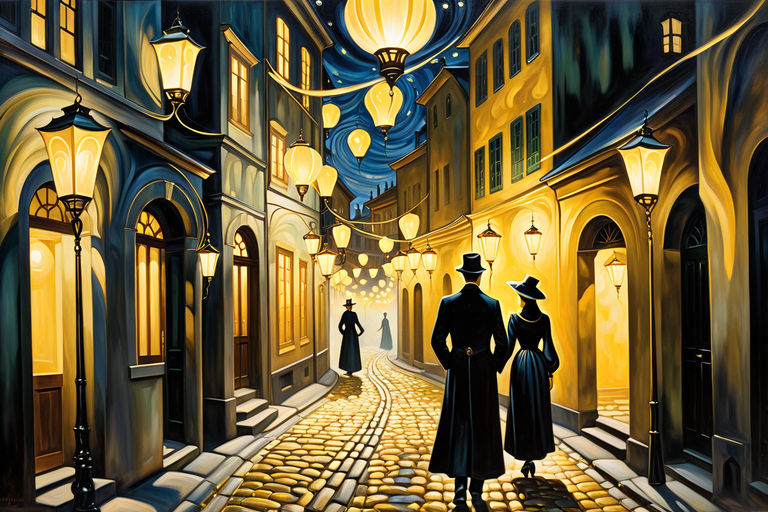
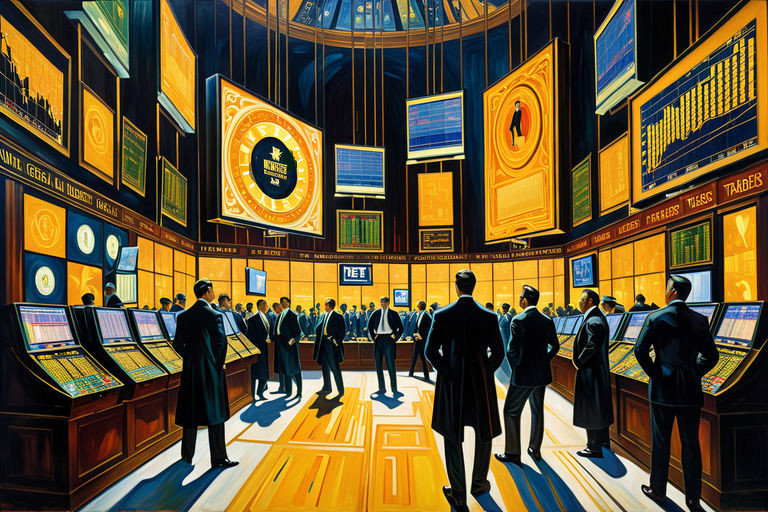
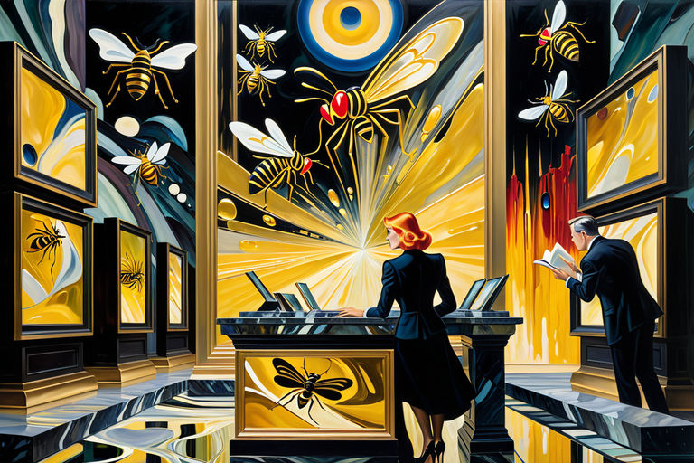
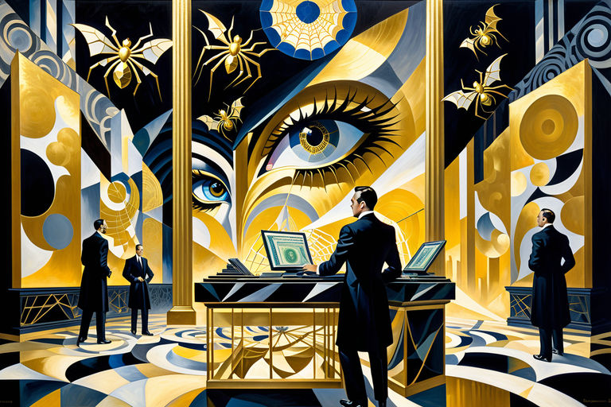

Pheromone Novel
Table of Contents
1. Echoes of a Golden Storm
1.1. Chapter 1

In quaint, forgotten nooks of dimly-lit towns, it’s whispered amongst the nocturnal wanderers - those with discerning nostrils - that pheromones doth sing, their voices a sultry symphony enticing seekers of carnal knowledge to follow.
Golden attractors these scents are, launching arrows of desire and lust at those receptors: ligand sentinels standing guard at the fortress of human longing. An onslaught of temptation they allow, as their gates swing wide to release that which lies within: the animalistic nature of man, concealed under veneers of civility and restraint.
Such fateful night in unassuming town of Arbour-on-Hill did transpire. Streets, hushed under cloak of darkness, welcomed the tender brushstrokes of breeze. And as shadows danced upon cobblestones, so too did whispers of unbridled cravings meander through fog-kissed alleyways.
The air pulsed, rhythmic and insistent - pheromonal tendrils entwining, forming nooses baited with aurous allure. A siren’s call to the desperate, the curious, and the damned. Bounding past doorways and casement, they sought, these seekers: human heat-seeking missiles, locked onto the frequencies of longing.
It began with a single cough, a trembling, hesitant introduction into quietude. Inexorable, its tremulous quaver weaved through darkness: a thread unspooled, connecting the unknowing to that which lay waiting. With each hesitant step, the scent entangled tighter, its golden strands ensnaring them until veneers cracked.
1.2. Chapter 2

Came the paroxysm - fevered, ravenous seeking. Gilded lures glinting in viscous murk, hungered, hunted, called. Unsteady shuffling, gasped breaths, moths entranced by the golden flame. Cobbled streets shivered at the pounding of steps.
Plummeting, tumbling: gold price streaking downward. In glass-and-metal temples, faces paled, voices raised, fingers tapped upon tabletops. Tickers flashed, chanted their dirges of currency devalued. Screens flashed red, blue, white - alerts of portentous downdrift.
Onscreen, newsreaders spoke, their lipsticked mouths shaping words to comfort. “No fear,” they lied, “buy low, sell high.” Yet in shadows beyond monitor’s glow, worry gnawed.
Scents intensified, potency dialed up, an elixir of affluence. Pheromones wafted: heavy, a potion distilled to ensnare the willing.
Prices soar, gilt steepling. Alerts pulse, blare-bleat warnings. Trapped traders’ fears ignite, crackle: popcorn popping, spitting tension.
Beneath watchful lenses, hidden faces fret: time’s passage. Flitting finger-pecks: trade, barter, buy.
Auctioneer squeals, bidding begins, fierce, fearless. Eyes aglitter, mouths ajar, hands airborne: waving, wrangling, wildly wielding. Gilt-gilded, potion-laced airborne: drifting, dancing, descending.
Newsreaders’ lipsticked lies: “Panic none, market’s swings cyclic. Pheromone price : stars exploding, luminous, incandescent. Opaque screens glowing amber, radiating - lava-lit molten luxuriance. Fingers flick, swipe, tap: dancing jittery digits - jittery indeed, jittery traders.
Newsreaders murmur, speak, shout, scream. Pheromones pricetag: astronomical, atrocious, absurd. Silver screen flickerflashes: starburst supernova. Pheromones, asset new, asset more golden, even with gold.
1.3. Chapter 3

Market madness marches: gilt fever grips all. Prices skyward spiral in pheromonal pandemonium. Onscreen, lipsmackin’ lies: “Panic not!”
Potion-drenched heavens shimmer, reflecting frantic frenzy. Gilded screens blare warnings. Hidden, masked men fret, fume: time’s passage slips through hands. Fingertips frenzied: jab, jab, jab, swipe, swipe, swipe.
Fingers flick ’cross glassy granite: tapping, typing, tracing futile efforts to stave off ruin, or reap reward. Silvered lips, curved coral, form half-hearted hopes in mellifluous whispers.
Newsreaders’ lips quiver, curling into clownish grins. Eyes flick, bob, jiggle, cartoonish caricatures of concern. Smoky laughs, foggy giggles pour, hazy plumes of comedic chortles.
Unfazed, on screen, newsreaders’ lipsmackin lies swarm, “Panic unneeded! Stocks soaring! Plummeted gold rising anew!” Yet, unspoken fears, unheeded worries rise, unseen spiders spun in the gilded webs of the forgotten.
Gleaming pheromone arachnids scuttled, their gossamer threads ensnaring bewildered golden insects. Fickle valuations sprouted fangs, sinking deep into investors’ minds, whispering of gains and losses. Once-stable market succumbed to anarchy, as pheromone arachnids danced, their venom coursing, ensnaring all within gilded cages of market.
Silver-tongued newsreaders sang, enchanting frenzied swarm, their eyes aglow, as each golden insect jostled for prime position in intricate gilded webs. Tendrils of fear and greed snaked amidst crowd, festering, corrupting, as more investors clamored to join.
Unnoticed, gilded cages silently closed, bound within stranglehold of pheromonal plague. Within golden web, pheromone arachnids shuddered, sated, victorious in their malevolent domination. High above, newsreaders’ lips pressed tight, a forced smile concealing grimmest of secrets.
1.4. Chapter 4

Pheromones persist, potent, powerful, provoking. Gold-laced wind whips mirthful mayhem, whirlwinds of wealth and woe. Market madness roars on, raucous, rollicking, rocketing upward in gilt-gilded glory. Yet unspoken secrets slither.
Meanwhile, unseen masses skulk in gloom, forgotten, forlorn, and fearful. Fingers flit, pointless pleas in airy naught. Yet phantom force compels, drives ’em deeper into golden chasm, reckless, mindless marionettes. Ha! Ain’t that a hoot, a scream, a riot?
Gold, it seems, has remembered its roots, dug ’em up, and run off, shrieking like a banshee. And all around, invisible arachnids spin, silent-footed, weaving golden-hued webs-gilded traps ensnaring hapless humans. Ever danced with a despairing day trader? It’s a freaky feast of flailing limbs and hot air, lemme tell ya.
Lost souls, traders all, wiggled, jerked, and twitched in vain. Golden trap, cloyingly deceitful, whispered sweet promises of fortune. Yet, ’twas a piper’s tune—a tantalizing tease!
Pheromone traders, like misguided missiles, rained down on those frantic digits: a writhing conga line of creepy-crawlers commanding chaos. Sensory diversionaries, they were—sneaky little seducers weaving a web of frenzied folly!
These buggers twirled, and tiptoed through ether, their gilded threads ensnaring the senses, a golden glitter-bomb, a tickling tick-tock seduction. Invisible marionettes, they danced and dazzled, a gleeful grinning gallery of glittering grotesqueries.
And the people, oh the people—they squirmed, they squealed, they scrambled for cover in their gilded cages, shackled by their own fears, shuddering shadows of their once-confident selves.
As the market’s mania reached a crescendo, the newsreaders sang their siren song, fingers steepled, brows arched, the mellifluous murmur of manipulation: “Fear not, dear flock! Swift ships sail stormy seas, emerging ever brighter, bolder, emboldened by the bounty below!”
Yet, unseen, unheard by all but those with ears to listen and eyes to see, a silent symphony of shrieks and sobs slipped through the cracks, the forgotten wails of the forsaken.
Unbeknownst to the puppet masters in their glassy towers, a storm brewed, thunderous and tempestuous, an uprising of the unheard and unseen, the downtrodden and desperate: the unwashed masses of market manipulation.
In the heat of the hysteria, the golden cage began to tremble, threatening to shatter the gilded glass. As the pheromones reached a fever pitch, the arachnids’ grip on their golden prey began to falter.
And so, the stage was set: high above, the puppet masters watched, the market teetering on the edge of a precipice, their creation quivering atop a golden precipice.
As the arachnids’ venom coursed through their gilded veins, the sailors felt a stirring, a spark of resistance kindled within their weary hearts.
The market, it seemed, was about to unleash a tempest of its own, the likes of which these golden grounds had never seen.
1.5. Chapter 5

The sailors’ hearts drummed in their chests like war-drums, their eyes wide as dinner plates as they beheld the chaos that was their market. The once-gleaming gold that had adorned their booths and tables was now a molten mess of mayhem. Pots and kettles lay scattered across the deck, whistling and gurgling like a choir of teapots belting out a cacophonous hymn only they could comprehend.
The once-stately sailors, now disheveled and dismayed, darted about the listing vessel, scrambling to salvage whatever remnants of sanity they could muster.
Their captain, a once-sturdy sea dog with a mighty beard like plank, stood at the helm. He clutched the wheel, knuckles white as barnacles in a storm. His once-bright eyes, now dull as anchors, stared out into the abyss of uncertainty. He looked every bit the captain of a ship on the edge of calamity, his once-taut uniform now hanging off him like a ragged sail flapping in the wind.
Around him, the crew darted and dashed, each one lost in a frenzy of their own. Each one was a whirl of limbs and wild looks, like chickens fleeing a fox. It was, in a word, chaos.
Yet, amidst this tumult, the sailors found a strange, gallows humor.
“What in Davy Jones’ Locker happened here?” one sailor cried, holding aloft a half-melted frying pan. His once-merry eyes were now wide as saucers, a look of awe and abject terror stirred together into a strange, wild stew.
“I reckon the pheromones done got hold of our market!” another sailor shouted, clutching at a tattered ledger, bits of numbers trailing off the pages like flotsam on the waves.
The captain only grunted, barely able to keep the ship steady, his knuckles white on the wheel. He looked to the horizon, where the setting sun was beginning to melt into the sea, a molten ball of fiery fury.
“We’re in for a bumpy ride, me hearties,” he growled. “A right bumpy ride.”
The sailors, looking to their captain, knew they were in for a wild, wooly time. A time that may well go down in the annals of seafaring history. But for now, they had to weather this market storm.
As the sun dipped below the horizon, the skies above erupted into a riot of colors, a swirling vortex of hues that looked as if the very heavens themselves were being churned into a frothy frenzy.
Aye, the market had turned tempestuous, a roiling sea of red and green and black and white. The sailors looked at one another and shared a wild grin. The storm was here, and they were right in the thick of it.
The market, they knew, was no longer a place for gentlemen to make their fortunes. No, this was a new world, a wild frontier where men were not made - they were forged.
The sailors looked at each other, a steely resolve, a fierce determination, a comradery that only comes from sharing a harrowing ordeal.
The market, they knew, was theirs to conquer. So, shoulder to shoulder, they stood, these sailors. The market would not break them. Nay, they would tame this market, or be swept away with it.
“Tighten the lines, me hearties!” the captain boomed, his voice full of gravel and grit. “Tighten the lines! We’ll ride this market out, and when it’s done, we’ll be the ones left standing!”
Unbroken, they trudged forward. With each hoist, each haul, their spirits soared like seagulls. As they stood at the prow, the market wind whipping through their hair, they knew they were alive.
2. Αντίλαλοι μιας Χρυσής Καταιγίδας
2.1. Κεφάλαιο πρώτο
Σε γραφικές, ξεχασμένες γωνιές χαμηλοφωτισμένων πόλεων, ψιθυρίζεται ανάμεσα στους νυχτερινούς περιπλανώμενους - αυτούς με διακριτικά ρουθούνια - ότι οι φερομόνες τραγουδούν, οι φωνές τους μια αποπνικτική συμφωνία που παρασύρει τους αναζητητές της σαρκικής γνώσης να ακολουθήσουν.
Χρυσοί ελκυστές είναι αυτές οι μυρωδιές, εκτοξεύουν βέλη επιθυμίας και λαγνείας στους υποδοχείς: συνδετοί δεσμοφύλακες φρουρούν το φρούριο της ανθρώπινης λαχτάρας. Ένα επιτρεπτό πέπλο πειρασμού, καθώς οι πύλες αιωρούνται διάπλατα για να απελευθερώσουν ότι εγκλείεται μέσα: η ζωώδης φύση του ανθρώπου, που κρύβεται πίσω προσωπείων ευγένειας και περιορισμού.
Ήταν εκείνη την μοιραία νύχτα στην ανεπιτήδευτη πόλη Αρβολόφου που συνέβη. Οι δρόμοι, σκεπασμένοι κάτω από τον μανδύα του σκότους, υποδέχτηκαν τις τρυφερές πινελιές της δροσιάς. Και καθώς οι σκιές χόρευαν πάνω σε λιθόστρωτα, έτσι κι οι ψίθυροι αχαλίνωτης λαχτάρας ελίσσονταν στα σοκάκια που φιλούσαν την ομίχλη.
Ο αέρας παλλόμενος, ρυθμικός και επίμονος - οι φερομονικοί έλικες μπλέκονταν, σχηματίζοντας θηλιές δολωμένες με αστραπιαία γοητεία. Ένα κάλεσμα σειρήνας στους απελπισμένους, τους περίεργους και τους κολασμένους. Οριοθετώντας περασμένες πόρτες και κουφώματα, αναζήτησαν αυτούς τους αναζητητές: ανθρώπινοι πύραυλοι αναζητητούν θερμότητα, εκπέμπουν στις συχνότητες της επιθυμίας.
Ξεκίνησε με έναν μόνο βήχα, ένα τρέμουλο, διστακτική εισαγωγή στην ησυχία. Ανελέητο, τρέμουλο που πλέκει στο σκοτάδι: μια κλωστή αδιέξοδη, συνδέει το απρόσμενο με το αναμένον. Με κάθε διστακτικό βήμα, το άρωμα μπλέκονταν πιο σφιχτά, τα χρυσά νήματα το παγιδεύουν μέχρι τα πέπλα να ραγίσουν.
2.2. Κεφάλαιο δεύτερο
Ήρθε ο παροξυσμός - πυρετώδης, λυσσαλέα αναζήτηση. Επιχρυσωμένα θέλγητρα αστράφτουν σε παχύρρευστο σκοτάδι, πεινασμένα, κυνηγημένα, καλεσμένα. Ασταθές ανακάτεμα, αναπνοές λαχανιάσμένες, σκώροι μαγνητισμένοι από τη χρυσή φλόγα. Τα λιθόστρωτα δρομάκια έτρεμαν απο κρότο πατημάτων.
Κατακόρυφη πτώση, κατάρευση: η τιμή του χρυσού κυλάει παρακάτω. Ναοί από γυαλί και μέταλλο, κρόταφοι χλωμοί, οι φωνές υψωμένες, δάχτυλα πατούν πάνω σε επιφάνειες. Σηματοδότες αναβοσβήνου, ψάλλουν παραμύθια τους για νόμισμα υποτιμημένο. Οι οθόνες φωτίζουν με κόκκινο, μπλε, λευκό - ειδοποιήσεις για προφανή πτώση.
Στην οθόνη, οι αναγνώστες ειδήσεων μίλησαν, με το κοκκινοβαμένα χείλη τους διαμορφώνουν λέξεις για παρηγοριά. «Χωρίς φόβο», είπαν ψέματα, «αγόρασε χαμηλά, πούλαγε ψηλά». Ωστόσο, σε σκιές πέρα από τη λάμψη της οθόνης, η ανησυχία ροκάνιζε.
Οι μυρωδιές εντάθηκαν, η ισχύς κατακλύστηκε, ένα ελιξίριο ευμάρειας. Φερομόνες έσκασαν: βαρείς, μία δοσολογία αποσταγμένη για να κυκλώσει τους πρόθυμους.
Οι τιμές εκτινάσσονται στα ύψη, επιχρυσωμένη ισοπέδωση. Παλμικές ειδοποιήσεις, προειδοποιήσεις εκρήξεων. Οι φόβοι των παγιδευμένων εμπόρων φουντώνουν, κροταλίζουν: σκάνε οι σπόροι καλαμποκιού, φτύσιμο, ένταση.
Κάτω από τους προσεκτικούς φακούς, κρυμμένα πρόσωπα ανησυχούν: το πέρασμα του χρόνου. Περνώντας δάχτυλα: εμπόριο, ανταλλαγή, αγορά.
Ο δημοπράτης τσιρίζει, η προσφορά αρχίζει, άγρια, ατρόμητη. Μάτια λαμπερά, στόματα μισάνοιχτα, χέρια στον αέρα: κυματίζουν, τσακώνονται, κουνιούνται απειλητικά. Επιχρυσωμένο, πετούμενο ιατρικό: παρασύρεται, χορεύει, παραπαίει.
Ψέματα κοκκινοβαμμένων χειλιών από τους αναγνώστες ειδήσεων: “Πανικός κανένας, οι ταλαντεύσεις της αγοράς είναι κυκλικές. Τιμή φερομόνης: αστέρια εκρήγνυνται, φωτεινά, πυρακτωμένα. Αδιαφανείς οθόνες λαμπερό κεχριμπαρένιο, ακτινοβολούν - λιωμένές πολυτέλειες φωτισμένες από λάβα. Τα δάχτυλα κινούνται, σέρνουν χτυπήματα: χορεύουν, τρελά ψηφία, αγχωμένοι πωλητές.
Οι αναγνώστες ειδήσεων μουρμουρίζουν, μιλούν, φωνάζουν, ουρλιάζουν. Τιμή φερομόνης: αστρονομική, φρικτή, παράλογη. Ασημένια οθόνη αναβοσβήνει: υπερέκρηξη αστέρων. Φερομόνες, περιουσιακό στοιχείο καινούργιο, περιουσιακό στοιχείο πιο χρυσό, ακόμα και απ`το χρυσό.
2.3. Κεφάλαιο τρίτο
Πορεία τρέλας στην αγορά: ο επίχρυσος πυρετός τα πιάνει όλα. Σπείρα προς τον ουρανό σε φερομονική πανδαισία. Στην οθόνη, τα κοκκινοβαμένα χείλει ψεύδονται: “Όχι πανικός!”
Οι ουρανοί γεμάτοι με λαμπυρίζοντα γιατροσόφια, ανακλούν την ξέφρενη φρενίτιδα. Οι επιχρυσωμένες οθόνες κράζουν προειδοποιήσεις. Κρυφοί, μασκοφόροι ταράζουν, αναθυμιάζονται: το πέρασμα του χρόνου γλιστράει μέσα από τα χέρια. Τα δάχτυλα φρενήρα: πάτημα, πάτημα, πάτημα, κύλιση, κύλιση, κύλιση.
Δάχτυλα σταυρώνουν τον γυάλινο γρανίτη: πάτημα, χτύπημα πληκτρολόγησης, ανίχνευση μάταιων προσπαθειών για αποφυγή καταστροφής ή αποκομιδή ανταμοιβής. Ασημένια χείλη, κυρτά κοράλλια, σχηματίζουν μισόλογους ελπίδες με γλυκούς ψιθύρους.
Τα χείλη των αναγνωστών ειδήσεων τρέμουν, κουλουριάζονται σε γελωτοποιά χαμόγελα. Κινηματογράφηση σε πρώτο πλάνο, βαρίδι, σπρώξιμο, γραφικές ζωγρφιές ανησυχίας. Καπνιστά γέλια, ομιχλώδη γέλια ξεχύνονται, μουντά λοφία από κραυγαστούς γέλωτες.
Ανενόχλητοι, στην οθόνη, ψευδόμενα χείλια αναγνωστών ειδήσεων σμέζονται, “Πανικός περιττός! Οι μετοχές εκτινάσσονται στα ύψη! Ο χρυσός που κατέρρεε ανεβαίνει ξανά!” Ωστόσο, ανείπωτοι φόβοι, ανυπόκριτες ανησυχίες υψώνονται, αόρατες αράχνες περιστρέφονται στους επιχρυσωμένους ιστούς των ξεχασμένων.
Γυαλιστερές αραχνοειδείς φερομόνες κατασπαράσουν, οι κλωστές τους παγιδεύουν χαμένα χρυσά έντομα. Οι ασταθείς αποτιμήσεις φύτρωσαν κυνόδοντες, βυθίζονται βαθιά στο μυαλό των επενδυτών, ψιθυρίζουν κέρδη και ζημίες. Η κάποτε σταθερή αγορά υπέκυψε στην αναρχία, καθώς οι αραχνοειδείς φερομόνες χορεύουν, το δηλητήριό τους κυλά, παγιδεύοντας μέσα σε όλα τα επιχρυσωμένα κλουβιά της αγοράς.
Οι ασημένιοι αναγνώστες ειδήσεων τραγουδούσαν, μαγευτικά ξέφρενα σμήνος, τα μάτια τους λάμπουν, καθώς κάθε χρυσαφένιο έντομο σπρώχνεται για πρώτη θέση στους περίπλοκους επιχρυσωμένους ιστούς. Περικοκλάδες φόβου και απληστίας έρπονται στο πλήθος, τρέμουν, διαφθείρουν, καθώς περισσότεροι επενδυτές φώναζαν να συμμετάσχουν.
Απαρατήρητα, επιχρυσωμένα κλουβιά σιωπηλά κλειστά, δεμένα μέσα στο ασφυκτικό κλοιό της φερομονικής πανώλης. Μέσα στον χρυσό ιστό, οι αραχνοειδείς φερομόνες ανατρίχιασαν, χόρτασαν, νικητές στην κακόβουλη κυριαρχία τους. Ψηλά, τα χείλη των αναγνωστών ειδήσεων πιέζονταν σφιχτά, ένα αναγκαστικό χαμόγελο κρύβει τα πιο ζοφερά μυστικά.
2.4. Κεφάλαιο τέταρτο
Οι φερομόνες επιμένουν, καυστικές, ισχυρές, προκλητικές. Ο χρυσοδεμένος άνεμος μαστιγώνει χαρούμενο χάος, ανεμοστρόβιλοι πλούτου και θλίψης. Η τρέλα της αγοράς βρυχάται, θορυβώδης, κυλιόμενη, εκτοξεύεται προς τα πάνω σε επιχρυσωμένη δόξα. Ωστόσο, τα άρρητα μυστικά ξεγλιστρούν.
Εν τω μεταξύ, αόρατες μάζες σκαρφαλώνουν στο σκοτάδι, ξεχασμένες, απογοητευμένες και φοβισμένες. Τα δάχτυλα πετούν μακριά, άσκοπες παρακλήσεις σε αέρινο τίποτα. Ωστόσο, η φανταστική δύναμη τους αναγκάζει, τους οδηγεί βαθύτερα στο χρυσό χάσμα, απερίσκεπτες, αλόγιστες μαριονέτες. Χα! Δεν είναι αυτό μια κραυγή, μια ταραχή, ένας ξεσηκωμός;
Ο χρυσός, φαίνεται, θυμήθηκε τις ρίζες του, τις ξέθαψε και έτρεξε, ουρλιάζοντας σαν φάντασμα. Και τριγύρω, αόρατοι αραχνοειδείς ιστοί υφαίνονται, με σιωπηλά πόδια, χρυσαφένοι ιστοί -επιχρυσωμένες παγίδες παγιδεύοντας άτυχους ανθρώπους. Χορέψατε ποτέ με έναν απελπισμένο πωλητή; Είναι μια παράξενος χορός με πετούμενα άκρα και ζεστό αέρα, να σας πω.
Χαμένες ψυχές, έμποροι όλοι, κουνήθηκαν, τραντάχτηκαν και συσπάστηκαν μάταια. Χρυσή παγίδα, ψεύτικα απατηλή, ψιθύριζε γλυκές υποσχέσεις τύχης. Ωστόσο, ήταν η μελωδία ενός αυλητή—ένα δελεαστικό πείραγμα!
Οι έμποροι φερομόνης, σαν άστοχοι πύραυλοι, έπεσαν βροχή σε αυτά τα ξέφρενα ψηφία: μια περιστροφική σειρά από ανατριχιαστικά ερπυστριοφόρα οχήματα επιβάλλουν χάος. Αισθητηριακοί εκτροπείς, ήταν—ύπουλοι μικροί σαγηνευτές που ύφαιναν έναν ιστό φρενήρης ανοησίας!
Οι ενοχλητικοί αυτοί επισκέπτες στροβιλίζονταν και περνούσαν τις μύτες των δακτύλων τους μέσα από τον αιθέρα, με τις επιχρυσωμένες κλωστές τους να παγιδεύουν τις αισθήσεις, μια χρυσή βόμβα λάμψης, μια γαργαλιστική αναπηδούσα αποπλάνηση. Αόρατες χειριστές, χόρευαν και έκθαυμψαν, μια χαρούμενη έκθεση τέχνης χαμογελώντας από αστραφτερές χονδροειδείς γελοιογραφίες.
Και οι άνθρωποι, ω οι λαοί — στρίμωχναν, τσίριζαν, ανακατεύονταν για κάλυψη στα επιχρυσωμένα κλουβιά τους, αλυσοδεμένοι από τους δικούς τους φόβους, ανατριχιαστικές σκιές του άλλοτε σίγουρου εαυτού τους.
Καθώς η μανία της αγοράς κορυφώθηκε, οι αναγνώστες ειδήσεων τραγουδούσαν το προσελκυστικό τραγούδι τους, τα δάχτυλα σφιγμένα, τα φρύδια αψιδωμένα, το γλυκύτατο μουρμουρητό της χειραγώγησης: «Μη φοβάσαι, αγαπητό κοπάδι! Προχώρα παρακάτω!“
Ωστόσο, αόρατη, ανήκουστη από όλους εκτός από εκείνους που έχουν αυτιά να ακούν και μάτια να βλέπουν, μια σιωπηλή συμφωνία από κραυγές και λυγμούς γλίστρησε μέσα από τις χαραμάδες, τα ξεχασμένα κλάματα των εγκαταλειμμένων.
Χωρίς να το γνωρίζουν οι χειριστές στους γυάλινους πύργους τους, μια καταιγίδα ξέσπασε, βροντερή και καταιγιστική, μια εξέγερση των ανήκουστων και αόρατων, των καταπιεσμένων και απελπισμένων: των άπλυτων μαζών της χειραγώγησης της αγοράς.
Μέσα στον καύσωνα της υστερίας, το χρυσό κλουβί άρχισε να τρέμει, απειλώντας να σπάσει το επιχρυσωμένο γυαλί. Καθώς οι φερομόνες έφτασαν στο ύψος του πυρετού, η λαβή των αραχνοειδών στο χρυσό θήραμά τους άρχισε να παραπαίει.
Και κάπως έτσι, το σκηνικό είχε στηθεί: ψηλά, οι χειριστές κούκλων έβλεπαν, η αγορά τρεμούλιαζε στην άκρη ενός γκρεμού, η δημιουργία τους να τρέμει στην κορυφή ενός χρυσού γκρεμού.
Καθώς το δηλητήριο των αραχνοειδών κυλούσε μέσα από τις επιχρυσωμένες φλέβες τους, οι ναυτικοί ένιωσαν μια ανακίνηση, μια σπίθα αντίστασης να ανάβει μέσα στις κουρασμένες καρδιές τους.
Η αγορά, φαινόταν, έμελλε να εξαπολύσει μια θύελλα από μόνη της, όμοια με την οποία αυτά τα χρυσά εδάφη δεν είχαν ξαναδεί.
2.5. Κεφάλαιο πέμπτο
Οι καρδιές των ναυτικών χτυπούσαν το στήθος τους σαν τύμπανα πολέμου, τα μάτια τους ορθάνοιχτα σαν πιάτα δείπνου καθώς έβλεπαν το χάος που ήταν η αγορά. Ο άλλοτε αστραφτερός χρυσός που είχε στολίσει τους πάγκους και τα τραπέζια τους ήταν τώρα ένα λιωμένο χάος. Κατσαρόλες και χύτρες κείτονταν διάσπαρτες στο κατάστρωμα, σφυρίζοντας και γουργουρίζοντας σαν μια χορωδία από τσαγιέρες, ένας κακόφωνος ύμνος που μόνο αυτοί μπορούσαν να καταλάβουν.
Οι κάποτε αρχοντικοί ναυτικοί, τώρα ατημέλητοι και απογοητευμένοι, έτρεξαν γύρω από το πλοίο της λίστας, προσπαθώντας να σώσουν ό,τι υπολείμματα λογικής μπορούσαν να συγκεντρώσουν.
Ο καπετάνιος τους, ένα άλλοτε εύρωστο θαλάσσιο σκυλί με επίπεδη γενειάδα σαν σανίδα, στεκόταν στο τιμόνι. Έπιασε τον τροχό, με τις αρθρώσεις του λευκές σαν βαρέλια σε μια καταιγίδα. Τα κάποτε λαμπερά μάτια του, τώρα θαμπά σαν άγκυρες, κοιτούσαν έξω στην άβυσσο της αβεβαιότητας. Έμοιαζε σχεδόν ως καπετάνιος ενός πλοίου στα όρια της συμφοράς, με την κάποτε τεντωμένη στολή του να κρέμεται τώρα από πάνω του σαν ένα κουρελιασμένο πανί που χτυπάει στον αέρα.
Γύρω του, το πλήρωμα έτρεχε και ορμούσε, ο καθένας σε μία μανία των φρένων . Όλοι παρασύροταν απο μια δίνη παραφροσύνης και μανιωδών βλεμμάτων, σαν κοτόπουλα που ξεφεύγουν της αλεπούς. Ήταν, με μια λέξη, χάος.
Ωστόσο, μέσα σε αυτή την αναταραχή, οι ναυτικοί βρήκαν περίεργους, ακαταλόγιστους αστεϊσμούς.
“Μα το νουλάπι του Ντάβιου Τζόνσιου τι συνέβη του εδώ;” ένας ναύτης φώναξε, κρατώντας ψηλά ένα μισολιωμένο τηγάνι. Τα κάποτε χαρούμενα μάτια του ήταν τώρα διάπλατα και γουρλωμένα, ένα βλέμμα δέους και αποτρόπαιου τρόμου ανακατεύονταν μαζί σε ένα παράξενο, αλλοπρόσαλλο μίγμα.
“Πιστεύω ότι οι φερομόνες κατέκτησαν την αγορά μας!” φώναξε ένας άλλος ναύτης, σφιγμένος σε ένα κουρελιασμένο βιβλίο, κομμάτια αριθμών να συρρέουν απ´ τις σελίδες σαν ξύλινα επιπλέοντα απομεινάρια στα κύματα.
Ο καπετάνιος γρύλισε, μετά βίας που μπορούσε να κρατήσει το πλοίο σταθερό, οι αρθρώσεις του λευκές στο πηδάλιο. Κοίταξε τον ορίζοντα, όπου ο ήλιος που έδυει και άρχιζε να λιώνει στη θάλασσα, μια άμορφη σφαίρα πύρινης μανίας.
«Μπροστά μας έχουμε μια φουρτουνιασμένη διαδρομή, εγκάρδιοι», γρύλισε. “Μια πολύ φουρτουνιασμένη διαδρομή.”
Οι ναύτες, κοιτάζοντας τον καπετάνιο τους, ήξεραν ότι επρόκειτο να περάσουν μια επικίνδυνη, αλλοπρόσαλλη πορεία. Μια πορεία που μπορεί κάλλιστα να μείνει αθάνατη στα χρονικά της ναυτικής ιστορίας. Αλλά προς το παρόν, έπρεπε να ξεπεράσουν αυτή τη θύελλα της αγοράς.
Καθώς ο ήλιος βυθιζόταν κάτω από τον ορίζοντα, οι ουρανοί από πάνω ξέσπασαν σε μια ταραχή χρωμάτων, μια στροβιλιζόμενη δίνη αποχρώσεων που έμοιαζε σαν να αναδεύονταν οι ίδιοι οι ουρανοί σε μια αφρώδη παραζάλη.
Ναι, η αγορά είχε γίνει καταιγιστική, μια φουρτουνιασμένη θάλασσα από κόκκινο και πράσινο και μαύρο και άσπρο. Οι ναύτες κοιτάχτηκαν μεταξύ τους και μοιράστηκαν ένα άγριο χαμόγελο. Η καταιγίδα ήταν εδώ, και βρίσκοταν ακριβώς στην καρδιά της.
Η αγορά, ήξεραν, δεν ήταν πλέον χώρος για τους κυρίους να κάνουν την περιουσία τους. Όχι, αυτός ήταν ένας νέος κόσμος, ένα ταραχώδες σύνορο όπου οι άνθρωποι δεν φτιάχνονταν, σφυρηλατούνταν.
Οι ναύτες κοιτάχτηκαν μεταξύ τους, μια ατσάλινη επιμονή, μια σκληρή αποφασιστικότητα, μια συντροφικότητα που προκύπτει μόνο μετά μίας κοινής οδυνηρής δοκιμασία.
Η αγορά, ήξεραν, ήταν δική τους να την κατακτήσουν. Έτσι, ώμο με ώμο, στάθηκαν, αυτοί οι ναυτικοί. Η αγορά δεν θα τους έπαιρνε στο λαιμό της. Όχι, θα δαμάζανε αυτή την αγορά ή θα παρασύρονταν μαζί της.
«Σφίξε τα πανιά, εγκάρδιοι!» ο καπετάνιος διέταξε, η φωνή του τραχιά. “Σφίξτε τις τριχιές! Θα πλεύσουμε αυτή την αγορά και όταν τελειώσει, θα μείνουμε όρθιοι!”
Αδιάσπαστοι, προχώρησαν. Με κάθε ανυψωτικό, κάθε ανάσυρση, τα πνεύματά τους ανέβαιναν στα ύψη σαν γλάροι. Καθώς στέκονταν στην πλώρη, με τον αέρα της αγοράς να τους χτυπάει στα μαλλιά, ήξεραν ότι ήταν ζωντανοί.
3. Χρυσῆς καταιγίδος ἀντίλαλοι.
3.1. Κεφάλαιο πρώτο
Ἐν γραφικοῖς, λησμονημένοις γωνίαις σκοτεινοφωτισμένων πόλεων, ψιθυρίζεται μεταξὺ τῶν νυκτερινῶν πλανωμένων - τῶν με κρυφοῖς ῥῦθμοις - ὅτι οἱ φερομόναι ᾄδουν, αἱ φωναὶ αὐτῶν μιᾶς αποπνικτικῆς συμφωνίας ἐναρμονίζονται, ἥ ἐλκύει τοὺς ζητητὰς τῆς σαρκικῆς γνώσεως νὰ ἀκολουθήσουν.
Χρυσοὶ προσελκυστικοὶ εἰσίν οἱ ὀσμές αὗται, βέλη ἐπιθυμίας καὶ ἔρωτος ἀποστέλλουσαι πρὸς τοὺς δεκτὰς. Δεσμοφύλακες συνδετοί φυλάσσουσιν τὸ φρούριον τῆς ἀνθρωπίνης πόθου. Ένας ἐπιτρεπτὸς πειρασμοῦ πέπλος, ἐνῷ αἱ πύλαι εὐρύχωροι κρέμονται πρὸς τὸ ἐλευθερῶσαι ὅσα κεκλεισμένατὸ ζωώδες φύσημα τοῦ ἀνθρώπου, τὸ κρυπτόμενον ὀπίσω προσώπων εὐγένειας καὶ περιορισμοῦ.
Τοιαύτη μοιραία νύξ εν τη ατελεί πόλει Αρβολόφω ετελέσθη. Οδοί, κατακεκαλυμμένοι υπό την πέπλη του σκότους, υποδέχθησαν τα τρυφερά χάδια τοῦ δροσεροῦ αἰθέρος. Καθὼς δὲ αἱ σκιαὶ χόρευαν ἐπὶ τῶν λιθόστρωτων, οἱ λεπτομέρειαι τῆς ἀκαταμάχητης πόθου ἐλίσσοντο ἐν ταῖς στεναγματικαῖς στοὰς φιλοῦσαι τὴν ἀχλύν.
Ὁ ἀήρ, πνέων ῥυθμικὸς καὶ ἐπίμονος - οἱ φερομονικοὶ κύκλοι ἐμπλέκοντο, σχηματίζοντες δόλια δίκτυα μετὰ ταχύτητος γοητείας. Κάλεσμα σειρήνας πρὸς τοὺς ἀπελπισμένους, τοὺς περίεργους καὶ τοὺς κολασμένους. Ἔσχισαν παλαιὰς θύρας καὶ καταπατήματα, αὐτοὺς τοὺς αὐτούς ἐξεύρησαν, ἄνθρωποι πύραυλοι θερμότητα ζητοῦντες, ἐκπέμποντες ἐπὶ τὰς συχνότητας τοῦ πόθου.
Ἀρξάμενος ἐκ τοῦ μόνου βήχα, τρέμουλον, διστακτικὴν εἰσαγωγὴν εἰς τὴν ἡσυχίαν. Ἀνελεήτως, τρέμουλον πλέκοντι ἐν τῷ σκότει μίαν νῆμαν ἀδιέξοδον, συνδέον τὸ ἀπρόσμενον πρὸς τὸ ἐπιμένον. Μετὰ ἑκάστου διστακτικοῦ βήματος, τὸ ἄρωμα πλέκεται σφιχτότερον, τὰ χρυσᾶ νήματα αὐτὸ παγιδεύουν ἕως οἱ πέπλοι σχίσωσιν.
3.2. Κεφάλαιο δεύτερο
Ἦλθεν ὁ παροξυσμός - πυρετώδης, λυσσαλέα ἐξερεύνησις. Χρυσοῖ θήλακες ἀστράπτουσιν ἐν πηκτῷ θολερῷ σκότει, πεινῶντες, διωγμένοι, καλούμενοι. Ἀστάθμητος συρiστικὴ πορεία, ἀναπνοαὶ ἐπιπεπληγμέναι, νυκτερίδες μαγευόμεναι ὑπὸ τῆς χρυσῆς φλογός. Λιθόστρωτοι δρόμοι ταράχθησαν ὑπὸ τοῦ βρόντου τῶν βημάτων.
Καταπίπτουσα, καταρρέουσα ἡ τιμὴ τοῦ χρυσοῦ πτερνίζει κάτω. Ἐν ναοῖς ἐκ γυαλίου καὶ μέταλλον, πρόσωπα λευκαίνονται, φωναὶ ὑψοῦνται, δάκτυλα τύπτουσιν ἐπὶ τῶν τραπεζῶν. Αἱ σηματοδόται προσωπίζουσιν, ψάλλουσιν τὰς θρῆνοις περὶ τοῦ ἐκτιμημένου νομίσματος. Οἱ ὀθόναι ἀναβλύζουσιν κόκκινον, μέλαν, λευκόν - προειδοποιήσεις περὶ τῆς προφανοῦς καταπτώσεως.
Ἐπὶ τῆς οθόνης, οἱ ἀναγνῶσται τῶν ἐιδήσεων ἐλάλησαν, τοῖς βαφομένοις χείλεσι διαπλάττοντες ῥήματα παρηγορίας. “Μὴ φοβοῦ”, ψευδῆ εἶπαν, “ἀγόρασον ὑποτιμημένα, πούλησον ὑψηλῶς”. Ἀλλ᾽ἐν σκιαῖς πέραν τοῦ φωτὸς τῆς οθόνης, ἡ μέριμνα ἐδάγκασε.
Οἱ ὀσμαὶ ἐπήρθησαν, ἡ δύναμις ἐπλημμύρησε, φίλτρον εὐεξίας. Φερομόναι ἐκράγησαν βαρεῖς, δοσολογία ἀποσταγμένη περιφέρουσα τοὺς πρόθυμους.
Οἱ τιμαὶ ἀναπηδῶσιν εἰς ὕψη, χρυσωμένον ἴσιον. Ἱματικαὶ ἐιδοποιήσεις, προειδοποιήσεις ἐκρήξεων. Οἱ φόβοι τῶν παγιδευμένων ἔμπορων ἀνατρέπονται, ἀνατρίζουν, σπόροι καλαμποκίου σπάζονται, ἐμπετάζουν, ἀναταράσσονται.
Ὑπὸ τοῖς προσεκτικοῖς φακοῖς, κρυπτομένα πρόσωπα ἀνησυχοῦσινὁ παρελθὼν χρόνος. Διαπορευόμενα δάκτυλα, ἔμπορος, ἀνταλλαγή, ἀγορά.
Ὁ δημοπράτης ἀνακράζει, ἡ προσφορὰ ἄρχεται, ἄγρια, ἀτρόμητος. Ὄμματα λαμπρὰ, στόματα ἡμικλειστά, χεῖρες ἐν τῷ ἀέρι κυματίζουσιν, τσακίζουσιν, ἐπικινδυνεύουσιν. Χρυσωμένον, φίλτρῳ μεμιγμένον ἀερίῳ παρασύρεται, καταβαίνει, παραπίπτει.
Ἐπὶ τῶν οθόνης, ἡ τῶν νέων ἀναγνώστρια ψευδεῖς ἔλεγε λόγους“Μηδεμίαν πανικὸν ἀναγκάζεσθε, αἱ κινήσεις τῆς ἀγορᾶς φαινομενικαὶ εἰσίν. Ἡ τιμὴ τῆς φερομόνης ὡς ἀστέρων ἀνατείλαντων, λαμπρῶν, ἐμφράκτων. Οἱ οθόναι θολοειδεῖς κιττοῦσιν κίτρινον, ἐκπέμπουσαι - λάβαν λαμπερὰν πολυτέλειαν. Δάκτυλα ἀνακνιζόμενα, πληκτρολογοῦντα, ὀρχούμενα, δειλοὶ δακτύλοι - ὄντως ἀγωνιώδεις, ἀγωνιώδεις ἐμπόροι.
Ἡ τῶν νέων ἀναγνώστρια ψιθυρίζει, λέγει, βοᾷ, κράζει. Ἡ τιμὴ τῆς φερομόνης ἀστρονομική, τρομερή, ἀνόητος. Ὀθόναι ἀστραπτοβολοῦσι εἰκόνες ἀνατέλλουσαι. Φερομόναι, νέον ἔμπορον, περιουσίαν χρυσήν, καὶ χρυσοῦν μᾶλλον.
3.3. Κεφάλαιο τρίτο
Ἀγοραῖος παραφροσύνη προχωρεῖ χρυσὴ πύρωσις πάντας κατέχει. Τὰ πρὸς τὸν οὐρανὸν ἀναβαθμοὶ περιστρέφονται ἐν φερομονικῷ συνωστισμῷ. Ἐπὶ τῶν οθόνης, χείλεα ἐμπνεοῦσιν ψευδεῖς λόγους“Μὴ πανικοῦτε!”
Φάρμακεμβρεγμένοι οὐρανοὶ ἀνακλῶνται, ἀντανακλῶντες τὴν ἄτακτον ἀναστάτωσιν. Χρυσοῦνοι ὄθοναι βοῶσιν προειδοποιήσεις. Κρυπτοὶ, ἐπιμασκημένοι ἄνδρες ἀγωνίζονται, παραπονοῦνταιὁ χρόνος διαπίπτει διὰ τῶν χειρῶν. Δάκτυλα ἀγωνιώδη κόπτουσι, κόπτουσι, κόπτουσι, κύλισις, κύλισις, κύλισις.
Δάκτυλα ἐκτυπῶσιν τὸ γυαλῖνον γρανίτην πατῶντα, γράφοντα, διαγράφοντα ματαίας προσπαθείας περιόδου τῆς καταστροφῆς ἢ καρποῦ τῆς ἀνταμοιβῆς. Ἀργυροῦντες χείλεα, κυρταὶ κοράλλινοι, διατυποῦσιν ἡμιθελεῖς ἐλπίδας ἐν μελῳδίᾳ ἡδυγλωσσίας.
Τὰ χείλη τῶν ἀναγνωστῶν διαπορφύρουν, σεστραμμένα εἰς χλωροτριβεῖς γέλωτας. Οἱ ὀφθαλμοὶ ἀνασκιρτῶσι, κινοῦνται, σαλεύουσι, εἰκονίδια σκιαγραφοῦντες τῆς μεριμνῶσας φύσεως. Καπνοὶ γελάσματος, οὐρανοὶ γελοίων, πνιγμοὶ κωμικῶν χαρμοσύνων.
Ἀμεταίρετοι, ἐπὶ τῆς σκηνῆς, τὰ χείλη τῶν ἀναγνωστῶν ἐπιδέρονται ψευδῆ λόγια, “Μὴ πανικοῦτε! Οἱ μετοχαὶ ὑψοῦνται! Ὁ χρυσὸς τῶν πτωμάτων ἀναβαίνει ἐκ νέου!” Ἀλλὰ ἄφωνοι φόβοι, ἀπροσέγγιστα ἀνηλώματα ἐπανέρχονται, ἀόραται ἀράχναι ἐν τοῖς χρυσοῖς συνεπήραγμασμέναι ἱστοῖς.
Λαμπραὶ ἀραχνοειδεῖς φερόμοναι διαρρήξουσι, αἱ κλωσταὶ αὐτῶν παγιδεύουσιν ἀπολωλότα χρυσὰ ἔντομα. Οἱ ἀσταθεῖς ἀποτιμήσεις ἐξανθήσουσιν ὡς κύνοι ἀγρίοι, βυθίζονται βαθέως εἰς τὸν νοῦν τῶν ἀποδότων, ψιθυρίζουσιν κέρδη καὶ ζημίας. Ἡ ποτὲ σταθερὰ ἀγορὰ ὑποχώρησεν εἰς ἀναρχίαν, ὡς αἱ ἀραχνοειδεῖς φερόμοναι ὀρχοῦνται, τὸ δηλητήριόν τους ῥέει, παγιδεύοντες ἐν πᾶσιν τοῖς χρυσοκομίοις δικτύοις τῆς ἀγορᾶς.
Ἄργυρογλώσσοι ἀναγνώσται μελῳδοῦντες, μαγεύοντες τὸ ἐξαίσιον πλῆθος, οἱ ὀφθαλμοὶ αὐτῶν λάμπουσι, ἕκαστον χρυσὸν ἔντομον ἐναγωνιζόμενον εἰς τὸν ἄριστον τόπον ἐν τοῖς ἐν τοῖς περιπλοκοῖς χρυσοδιαπλεκτοῖς ἱστοῖς. Περικλάδες φόβου καὶ πλεονεξίας ἐπιπολῶσιν, τρέμουσιν, φθείρουσιν, καθὼς πλείονες ἐπενδυταὶ φωνάζουσιν νὰ μετέχωσιν.
Ἀπαρατηρήτως, χρυσοὶ κλοιοὶ ἀθόρυβοι ἐκλείσθησαν, δεδεμένοι ἐν τῷ πνιγηρῷ κράτει τῆς φερομονικῆς λοιμοῦ. Ἐν τῷ χρυσῷ ἱστῷ, οἱ ἀραχνοειδεῖς φερομόνες ἀνατρίχιασαν, χορτάσαντες, νικηταὶ ἐν τῇ κακοβουλίᾳ τῆς κυριαρχίας αὐτῶν. Ὑψηλὰ, τὰ χείλη τῶν ἀναγνωστῶν ἐιδήσεων συνέσφιγμένα πιέζονται, χαμόγελον ἀναγκαστικὸν κρύπτει τὰ μυστικώτερα.
3.4. Κεφάλαιο τέταρτο
Οἱ φερομόναι διατηροῦνται, δυναταί, ἰσχυραί, προκλητικαί. Χρυσδέδετος ἄνεμος σαλεύει χαρμοσύνην καὶ ταραχὴν, στροβίλους πλούτου καὶ λύπης. Ἡ τρέλα τῆς ἀγορᾶς ἀνακωκύζει, ἀνήφορος, ἀταραξίας, σφυροῦσα πρὸς τὴν χρυσοδέδετον δόξαν. Ἀλλὰ ἄφωνα μυστικὰ διατρέχουσιν.
Ἐν τῷ μεταξὺ, ἀθέατα πλῆθη ἐν σκότῳ καταδύονται, λησμονημένοι, ἐρημωμένοι καὶ φοβισμένοι. Δάκτυλα πετοῦνται, μάταιοι ἱκετείαι εἰς κενὸν. Ἀλλὰ φάντασμα δύναμις ἀναγκάζει, ὑποχωρεῖ, ἐμβάλλει αὐτοὺς εἰς τὸ χρυσδέδετον χάσμα, ἀνόητοι, ἀναισθήτοι νήπιοι. Χα! Μὴν εἶναι ἀστεῖον, κραυγή, ἀναταραχή;
Ὁ χρυσὸς, δοκεῖ, μνημονεύει τὰς ῥίζας αὐτοῦ, ἐξορύττει καὶ ῥέει, ὠρύεται ὡς φάσμα, βοῶν ὥσπερ μοιρολόι. Καὶ πάντοθεν, ἀοράτοι ἀράχναι ἱστοὺς ὑφαίνουσι, σιωπηλοὶ ποδῶν, χρυσοκόκκινους διὰ παγίδας ἀρπάζοντες ἀθώους ἀνθρώπους. Ποτε ὄρχησαι μετὰ ἀπελπισίας ἐν ταῖς ἡμέραις τῶν ἀγοραστῶν; Εἶναι θεομαχία τῶν ἀσθενῶν μελῶν καὶ κενῆς πνοῆς, ἄφες με σοι λέγειν.
Ἀπολωλότες ψυχαὶ, πάντες ἐμπόροι, ἠσκολούντο, ἠνείχοντο καὶ ἐσείσθησαν μάταιοι. Χρυσῆ παγίς, δολιότητι ἀπατηλή, γλυκεῖαν ἐλπίδα πλούτου ἐμυθεύετο. Ἀλλὰ παιάνας ἦν, μελῳδία αὐλητοῦ — πειρασμός ἡδύς!
Φερομονοπώλαι, ὡς πλανηθέντες βέλη, ἐπέπεσαν ἐπὶ τοὺς ἀγωνιζομένους ἀριθμούς συνεστραμμένη τῶν ποδῶν πομπή πλανώντων ἀναταράσσοντα τὴν τάξιν τῆς ἀκοής. Αἱ αἰσθητηριακαὶ πλάναι, δόλιοι μικροὶ ἐνεργετές ὑφαίνοντες ἱστὸν ἀνοήτου παραφροσύνης!
Ὅδε οἱ τῶν ἀνόητων ἀνερρίχθησαν καὶ ἐπατήθησαν διὰ τοῦ αἰθέρος, αἱ χρυσαῖ νῆματα αὐτῶν τὰς αἰσθήσεις παρεπλέκον, χρυσοῦν λαμπροβόλημα, ἐκπλήξεως καὶ διαδοχικής ἡδονῆς. Ἀορατοὶ κομψοδαντές, ὀρχούμενοι καὶ ἐκλάμποντες, χαίροντες καὶ γελῶντες, πάνδημον εὐφραινόμενον θέατρον λαμπρῶν γελοιογραφιῶν.
Ὁι δὲ ἄνθρωποι, ὦ οἱ ἄνθρωποι—ἐστρίβοντο, ἐβόαν, ἐπετάχυναν πρὸς κρυφὰς μορφὰς ἐν τοῖς χρυσοῖς φυλακτηρίοις, δεσμοῖς αὐτῶν τῶν φόβων, σεισάχθητα σκιὰς αὐτῶν τῶν αὐτοὺς πάλαι αὐτοπεποιθότων.
Ὅτε δὲ ἡ μανία τῆς ἀγορᾶς ἀπέφθασεν εἰς τὸ ὑψηλότατον, οἱ ἀναγνῶσται τῶν ἀγγελιῶν ᾄδοντες τὸν ἀκούοντα πείθουσαν μελῳδίαν, δακτύλους συναψάμενοι καὶ ὀφρῦς ἀνασκευάσαντες, τῆς παραπλάνησεως μελιφθόγγου μελωδίας “Μὴ φοβεῖσθε, ὦ ἀγαπητὸν ποίμνιον! Ταχεῖς ναῦς πλέουσιν ἐν τοῖς ἀνυδροῖς πελάγεσιν, ἀναδηλοῦσαι ἀεὶ φωτεινότεραι, θαρσαλεότεραι, ἐνδυναμούμεναι ὑπὸ τοῦ κάτω πλούτου!”
Ἀλλ’ ἄφαντον μὲν καὶ ἄκλητον πᾶσιν πλὴν τοῖς ὦσιν ἀκοῦσαι καὶ τοῖς ὄμμασιν ἰδεῖν, συμφωνία σιωπηλὴ κραυγῶν καὶ στεναγμῶν διὰ τῶν κρημνῶν διερράγη, λήθης ἐκλελησμένων βοῶν.
Ἀγνοουμένοις δὲ τοῖς κυβερνήταις ἐν τοῖς ὑαλίνοις πύργοις, κατακλυστήριον καταιγίδος ἐνεχθέν, βροντῆς πλήρης καὶ ἀνεμοσκολοπίζουσας, ἀνεξίστατον καὶ ἀφανὲς εἰσιόντων καὶ ὁρωμένων, τῶν ταπεινοτάτων καὶ ἀπείργωντοῦ ἀνυγιστάτου ὄχλου τῆς ἀγοραῖας πλάνης.
Ἐν τῷ πυρετῷ τῆς ὑστερίας, τὸ χρυσοῦν φυλακτήριον ἤρξατο τρέμειν, ἀπειλοῦν τὸν χρυσοῦν γυαλὸν κατασπάσαι. Ὄτε δὲ τὰ φερόμονα πρὸς ἐπίβουλον ἐξῆλθεν, ἤρξατο τὸν ἀράχνιον χειρὸς κρατεῖν τὸ χρυσοῦν λαφύριον.
Καὶ οὕτως, ἡ σκηνὴ ἡτοίμαστο ἄνωθεν, οἱ κυβερνήται παρετήρουν, ἡ ἀγορὰ ἐπὶ καταπτώσεως, τὸ κτίσμα αὐτῶν διαπεπολωμένον ἐπὶ χρυσοῦ κρημνοῦ.
Ἐν τῷ διαπεπολῆσθαι τὰς χρυσᾶς φλέβας τῶν ἀράχνων, οἱ ναύται ἔνιοι αἰσθάνοντο κίνησιν, φλόξ τῆς ἀντιστάσεως ἐν ταῖς κεκμηκόσιν καρδίαις αὐτῶν ἀνακεκηρυγμένην.
Ἡ ἀγορὰ, ἐφαίνετο, ἤμελλεν ἐξαποστεῖλαι θύελλαν αὐτοφώρως, ὅμοιαν ᾗ οἱ χρυσαῖ ταύται γῆς οὐκ ἄλλοτε εἶδον.
3.5. Κεφάλαιο πέμπτο
Οἱ καρδίαι τῶν ναυτῶν ἐκτύπων ἐν τοῖς στήθεσιν αὐτῶν ὥσπερ πολεμικὰ τύμπανα, οἱ ὀφθαλμοὶ αὐτῶν ἀνοικτοί ὡς πίνακες δείπνου, θεωροῦντες τὸ χάος ὅπερ ἦν ἡ ἀγορὰ αὐτῶν. Τὸ πρότερον λαμπρὸν χρυσᾶν ἐστόλιζεν τοὺς προκάθεσμας καὶ τὰς τραπέζας, νῦν δὲ ἦν ἁλμυρὸν καὶ ἀναταραχῆς κρῆμα. Πίθοι καὶ χύτραι διεσκόρπιζοντο κατὰ τὸν κάτω θάλαμον, σφυρίζοντες καὶ βρυγμοῦντες ὡς χορὸς τετευχότων κοχλιῶν, ᾄδοντες κακοφωνίαν ἣν μόνοι αὐτοὶ συνίεν.
Οἱ πρότερον εὐπρεπεῖς ναῦται, νῦν ἀκαταστάτως καὶ δυστυχῶς, διεσκίρτων ἐν τῷ διατρέχοντι πλοίῳ, σπεύδοντες σῶσαι ὅσα ἐπίλοιπα τῆς σωφροσύνης δυνατοὶ ἦσαν συναγεῖν.
Ὀ ναύκληρος αὐτῶν, πρότερον ἰσχυρός ναυτίλος μεγάλῃ πώγωνι ὡς ξύλον, εἱστήκει παρὰ τὸν κυβερνήτην. Συνεκράτει τὸ πηδάλιον, κόνδυλοι λευκοὶ ὡς βαλανίδες ἐν καταιγίδι. Οἱ πρότερον λαμπροὶ ὀφθαλμοὶ, νῦν βαρεῖς ὡς ἄγκυραι, ἐμβλέποντες εἰς τὸ ἄβυσσον τῆς ἀβεβαιότητος. Ἔδεικνεν ὅλως ὅτι ἦν ὁ κυβερνήτης τῆς νεὼς ἐπὶ τοῦ κατακλυσμοῦ, ἡ πρότερον σφιγγομένη αὐτοῦ στολὴ νῦν κρεμάμενος ὡς ῥᾳθυμίας πανὶ ἐν τῷ ἀνέμῳ.
Περὶ αὐτὸν, οἱ ναῦται τρέποντο καὶ φεύγοντο, ἕκαστος ἀπολωλότες ἐν τῇ ἰδίᾳ ἀνίατι. Ἕκαστος ἦν κύκλος ἐκ μελῶν καὶ ἀγρίων βλεμμάτων, ὡς ὄρνιθες φεύγουσαι τὸν ἀλώπηκα. Ἦν, ἐν λόγῳ, χάος.
“Τί ἐν τῷ κυλίκι τοῦ Δαβὺ Ἰώνου συνέβη ἐνθάδε;” ἔκραξεν εἷς ναύτης, τὸ ὀπάκιον τῆς καταψηλωμένης τηγάνης ἐπαράστας. Οἱ πρότερον χαρούμενοι ὀφθαλμοὶ νῦν εὐρεῖς ὡς πίνακες, εὐλάβειαν καὶ οἰκτιρμὸν ἐν μίξει θαυμασμοῦ καὶ ἀφανοῦς τρόμου συνενεχθέντας.
“Ὅτι, φαίνεταί μοι, οἱ φερομόναι ἐκράτησαν τῆς ἀγορᾶς ἡμῶν!” ἀνέκραξεν ἕτερος ναύτης, τὸν τεθλιμμένον λογιστὴν ἐπιδεξάμενος, μετὰ τῶν ἀριθμητικῶν καταλειφθέντων ἀπὸ τῶν σελίδων ὡς ἀπορρυπάσματα ἐπὶ τῶν κυμάτων.
Ὁ καπετάνιος μόνον γρυντῶν, ἀκροβατῶν μόλις ἐπὶ τοῦ πηδαλίου, οἱ κόνδυλοι λευκοὶ περὶ τὸν τροχόν. Ἐνέβλεψεν εἰς τὸν ὁρίζοντα, ὅπου ὁ ἥλιος ὑποδύωντας καὶ ἄρχων λιώνει ἐν τῷ πελάγει, μίαν ἀμορφὴν σφαῖραν πυρίνης μανίας.
“Ἡμᾶς μένει μίαν ταραχώδη πορείαν, ὦ ἑγκάρδιοι,” ἔφρυξε. “Μίαν ὀρθὴν ταραχώδη πορείαν.”
Οἱ ναῦται, βλέποντες τὸν κυβερνήτην αὐτῶν, ᾔδεισαν ὅτι μελλούσαν περάσει χρόνον ἄγριον καὶ ἄγροικον. Χρόνον ὅστις δύναται καλῶς ἀναμνησθῆναι ἐν τοῖς χρονικοῖς τῆς ναυτικῆς ἱστορίας. Ἀλλὰ πρὸς τὸ παρόν, ἔδει τοὺς ναυταίους ἀντέχειν τὸν στόχασμα τῆς ἀγορᾶς ταύτης.
Ὡς ὁ ἥλιος ὑποβαίνει ὑπὸ τὸν ὁρίζοντα, οἱ οὐρανοὶ ἐκρήμνισαν σὲ μιὰ ἔκρηξη χρωμάτων, μιὰ στροβιλοθύελλα απὸ αποχρώσεις ποὺ φαίνονταν σαν νὰ ἐκτυλίσσονταν αὐτοί οἱ οὐρανοί σ’ ἕναν αφρώδη κοχύλιασμα.
Ναί, ἡ ἀγορὰ ἐγίνετο καταιγιστική, μία θάλασσα φουρτούνης ἐξ ἐρυθροῦ καὶ πράσινου καὶ μέλανος καὶ λευκοῦ. Οἱ ναῦται ἀντεῖδον ἀλλήλοις καὶ μετεδίδοσαν μίαν ἄγριον γέλωτα. Ἡ καταιγίς ἦν ἐνταῦθα, καὶ ἦν ἀκριβῶς ἐν τῇ καρδίᾳ αὐτῆς.
Ἡ ἀγορά, ἔγνωσαν, οὐκέτι ἦν τόπος ἀνδράσιν εὐπρεπῆ πλοῦτον ποιεῖν. Οὔ, οὗτος ἦν νέος κόσμος, μία ταραχώδης σύνορος ἐν ᾧ οἱ ἄνθρωποι οὐκ ἐποιοῦντο, ἀλλὰ ἐφύσωντο.
Οἱ ναῦται ἀντεῖδον ἀλλήλοις, σιδηροκέντρινη ἀποφασιστικότητα, μαχητικὴ προθυμία, συντροφικότητα ἣ μόνον ἐκ τοῦ μεταδοῦναι ἀπὸ κοινοῦ μιὰν ταλαίπωρην πείραν προέρχεται.
Ἡ ἀγορά, ἔγνωσαν, ἦν αὐτῶν εἰς κατάκτησιν. Ὅμως, ὤμοι πρὸς ὤμον ἔστησαν, οὗτοι οἱ ναῦται. Ἡ ἀγορὰ οὐκ ἂν αὐτοὺς συντρίψει. Οὔχι, αὐτοὶ ἂν ἐκπαιδεύσουν τήνδε τὴν ἀγοράν, ἤτοι σὺν αὐτῇ ἀποθρασθῶσιν.
«Σφίξατε τὰ πανιά, ὦ ἐγκάρδιοι!» ἀνεφώνησε ὁ ναύκληρος, ἡ φωνὴ αὐτοῦ τραχεῖα. “Σφίξατε τὰς τριχίας! Πλευσόμεθα τὴν ἀγορὰν ταύτην καὶ ὅταν τελειώσῃ, μείνομεν ὀρθοί!
Ἀδιάσπαστοι, προῆλθον. Μετὰ παντὸς ἀνυψωτικοῦ, παντὸς ἀνασυρτικοῦ, τὰ πνεύματα αὐτῶν ἀνέβαιναν εἰς τὰ ὕψη ὡς χηνεῖς. Ὡς ἕστηκαν ἐπὶ τῆς πρύμνης, μετὰ τὸν ἀέρα τῆς ἀγορᾶς πλήττοντα αὐτοὺς τοὺς κόμης, ᾔδεισαν ὅτι ἦσαν ζῶντες.